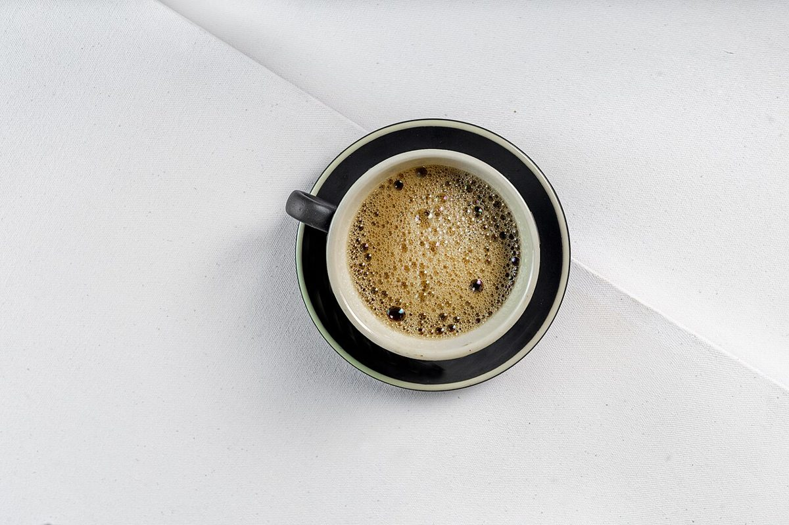
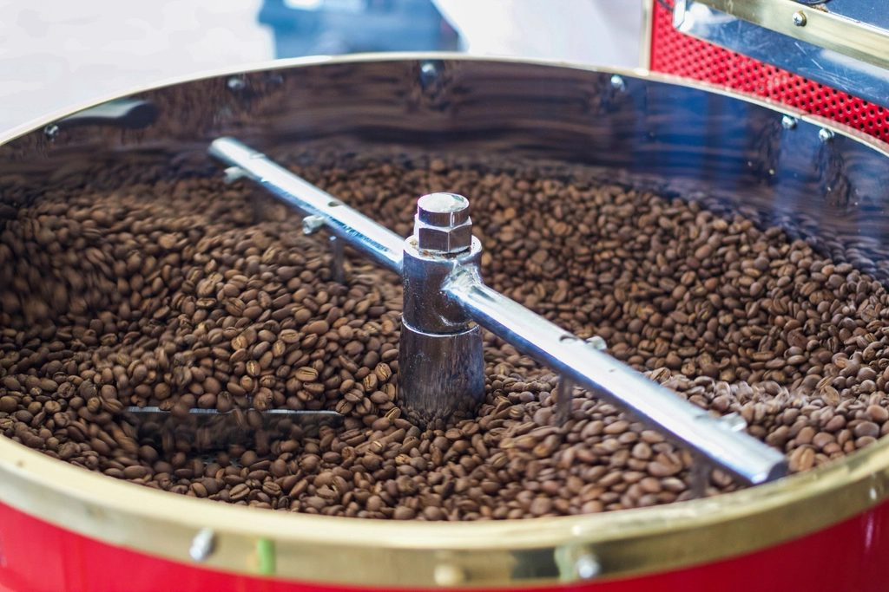

メニュー
メニューは準備中
メニューと価格は確認でき次第、こちらに掲載します。
| メニュー | 準備中 |
|---|---|
| 価格 | 準備中 |
| ご予約 | 準備中 |
下の写真は、活字の合字(ff・fi・fl・ffi・ffl)の見本になぞらえて並べた、制作側の遊びです。写真はフリー素材のイメージで、お店で提供しているものでも、提供メニューを示すものでもありません。
- ff

撮影地不明のイメージ - fi

撮影地不明のイメージ - fl

撮影地不明のイメージ - ffi

撮影地不明のイメージ - ffl

国外のイメージ(米国)